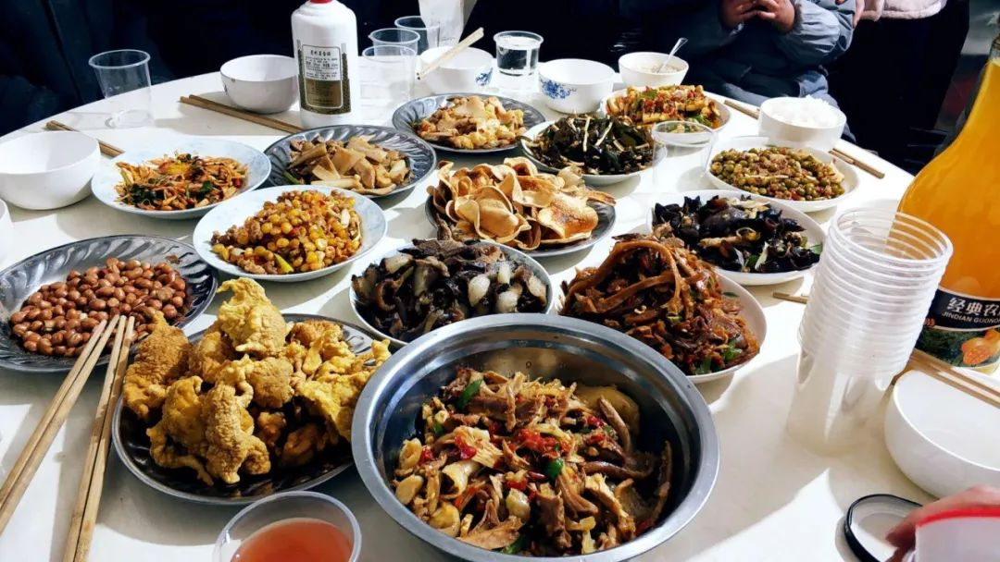
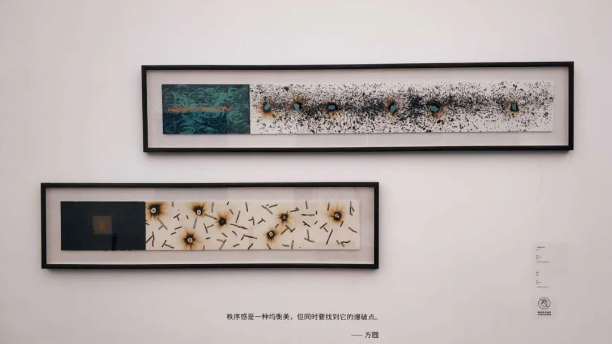
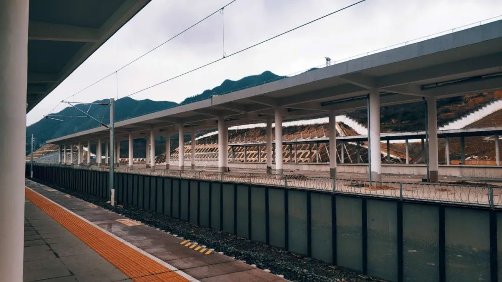
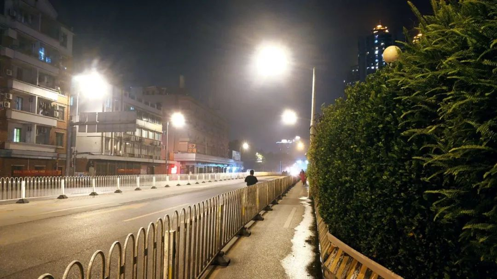
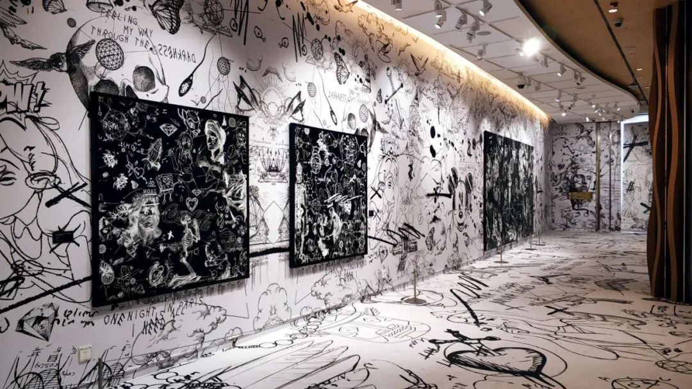

疫情下的“民间辟谣志愿者”_大风号_凤凰网
原文链接 备份链接 1月20日开始，围绕新冠肺炎的各类信息进入爆发期。 “板蓝根可预防肺炎”、“抽烟喝酒可抵御病毒”，在谣言四起的同时，23日我在微信朋友圈注意到，一条名为《接力编辑：关注新型冠状病毒的可靠信息与谣言》的石墨文档被频繁转 …
2020年1月20日，武汉疫情迅速升级。一批又一批的青年自发地行动起来，在线上或线下为抗疫贡献着自己的力量，Anti-2019-nCoV（简称A2N疫情志愿组）就是其中一支。
A2N先后开辟了辟谣组、物资组、翻译组、科普组等十一个小组。到目前为止，已经有很多全国各地的志愿者加入了A2N。
麻雀虽小，五脏俱全，为了让A2N们的微光在这个时代留得更久一些，A2N深度项目组为大家带来A2N内部访谈系列。
本期访谈对象：地方群&辟谣组-小胡
A2N.
参与A2N的缘起
问题1：为什么加入A2N呢？
答：你问我为啥加入A2N……我好像也不太记得了，貌似就是微博看到了，感觉做事情比较专业，然后就加群了。加群以后感觉不错也就干到现在。其实我以前对时事消息很麻木的，当发现这次疫情真的要降临到自己身边的时候，才开始真的焦虑起来。尤其是爆炸性新闻不断的那段时间，第一次感到前所未有的不安和焦虑。

小胡拍摄：大年三十当天的毕节高铁站
问题2：疫情刚刚爆发的时候你有什么感受？
答：我之前没有在意病毒的消息啊，感觉可能就是个新的传染病。我在广州最后的那个周末还去看了个展。直到21号前后我听钟南山说确定存在人传人了，我才开始关注这件事情。陆续发现身边带口罩的人越来越多了，我也赶紧准备了点。我1.24从广州回毕节的时候，就戴上了一个有呼吸阀的活性炭口罩。当时广州火车站已经有大概2/3的人戴上口罩了，确实明显感觉到空气紧张起来了！然而我下火车后发现毕节居然除了执勤人员，几乎没有人戴口罩！！！家里也是！那么我只好去跟他们一个个唠叨。
还好，我爸妈都是他们那边的长子和长女，总的来说都是比较听话的啦。然后我家很多亲戚是当地的基层干部，所以我回去后过了三四天，大家也都意识到要戴上口罩了。我身边情况还算好，不过许多亲戚很早就要回去上班了，要么到街道办公室值班，要么就是到村口喊喇叭去了……
A2N.
贵州群的奇特体验
问题1：为什么选择在贵州组里进行工作呢？
答：一个是因为当时觉得A2N的信息整合功能特别重要。我当时回去7天，一半时间在城里陪外婆，另一半时间在村里陪爷爷。当时村里拜年的人还是络绎不绝的，大家都没有重视起这个问题。但等到情况陡然升级之后，当地又开始谣言四起了。这让我领悟到了谣言能有多扯淡。我听到的最荒诞的谣言，是有人发了一条语音，语音里说哪里有一只母猪生崽，崽说“一天吃8个鸡蛋有利于抵抗病毒”……我想着怎么有人能无知这种程度orz……包括长辈里还有一些关于中医的谣传。当时候就感觉辟谣还是很必要的，一定要做点什么。
为了能做些事情，我大概是1月26号还是27号左右，回到城里的时候就加入了A2N的贵州地方群，想着在稳定有网的地方可以做些事情。一开始我想进广州组做点事情，因为平时我都住在广州那儿。但发现广深里面人比较多，也都对这个工作比较重视。所以我就想去老家贵州做做工作，因为担心当地人不够重视，怕情况发展得很严峻，而且刚开始这个群里人也不多。反正在这个机缘巧合里我结识了其他组员。

小胡拍摄：尚未被打断的年夜饭
问题2：你在贵州组主要做了些什么工作？有什么很新奇的收获吗？
答：贵州地区组有一个大群和一个小群。大群里就是各类省里的人会加入进来关注信息，而负责决策的小群则主要负责制作石墨文档以及协调各类信息。我是被贵州组的负责人拉进小群工作的。当时目标也比较简单，就是把地方群的工作目录建立出来。当时候贵阳的文档已经建立起来了，但地级市的还在建设过程中，所以我就认领了毕节和六盘水两个地方的任务。地方文档建设的事情前前后后大概持续了一星期左右。
我主要就是在两个地级市的文档里搜集地方政府和媒体公开的权威信息。说实话，在搜集这些信息的过程中我们还是非常认可两个地级市地方政府的工作效率的。疫情升级后不久，马上就出台了市内各个场所的管制措施，并且发放公告要求市民们尽量居家活动避免外出，而且叫停了驾照考试以避免有任何人群聚集的机会。相关的交通管制以及公共交通时间变更的信息发布也很快。同时，我把确诊患者所在车次的消息也跟交通信息一起公布在文档中方便大家传阅。虽然关了那么多东西，六盘水在关闭部分线下业务外，马上开启了线上政务服务。就像是给你关上一扇门，但也留一扇窗，保证日常生活有序进行。

小胡的艺术展记录：三段论
除此之外，我还搜集了一些社会保障与医疗保障的信息。六盘水也为居民口罩等医疗垃圾放置了专门的垃圾桶，安置在市区的各个角落。主要是避免环卫工在清理垃圾的时候发生二次感染的问题。还有加强了对公共厕所消毒工作的管理监督。我回广州以后也发现有诸如设置医疗垃圾桶之类的专门措施，觉得这些工作还是非常细致的。另外之前也提到的，毕节和六盘水为了防止医疗系统过载，启动响应的时候就开始修建新的隔离院区——尽管地方资源有限、规模不大，但是也为病床数量留足了储备。总之，我觉得这些行动还是非常专业而迅速的。
另外印象很深刻的是，贵州这边的信息透明以及与社会衔接做的很好。像我整理信息的两个地级市，如果医院有物资不够的情况是可以直接向社会求援的。区政府和县政府也公布了24小时值班的热线电话，而且这些都不是社区人员接听，直接由一线街道工作人员处理。同时，政府开放多条举报热线、微信网络举报通道以及信箱，欢迎群众反映在抗疫期间的各类问题并监督党政机关工作。以上这些措施还是非常能看出政府的决心的。再者，六盘水当地派出所的辟谣速度也很快。当地有人造谣说派出所里跑了一个确诊病人到安置点，然后这个造谣的始作俑者马上就被抓了。当地公安迅速澄清了谣言。
问题3：地区群工作中遇到的人有给你留下什么深刻印象吗？
答：地区工作有三件让我个人印象比较深的事情。一个是我在群里遇到一个贵州安顺的熟人朋友，不约而同地都来这个群做事。另一个就是我很多许多亲戚无论在什么岗位上，都试图为疫情尽一份力。我那些亲戚受教育程度不是很高，但是这次疫情里他们也主动地去运送物资啊，到村里帮忙宣讲疫情，还有转发信息什么的。我就觉得特别感动，因为以前觉得好像只有学历高、社会责任感强的人才会主动去做这些事，但现在发现其实大部分人在灾难的时候都是想贡献一份力量的。他们这些活动持续时间很长，直到最近都还在做。
当然，最后这件印象深的事情我觉得就有点诡异了。有个40岁左右的人不知怎么的混进了A2N贵州组的小群，平时也一声不响，分工下来的活也不接，好像没有人认识他。结果突然有一天，冒出来问大家有没有口罩可以卖给他……询问无果后此人也就退群了。我当时觉得挺无语的，不过他也没对我们工作造成什么影响，就是让我感觉做各种事情，抱有什么目的的人都会有。

小胡摄影作品：少年的奇幻漂流
问题4：如果让你现在回到地区群刚刚建立的时候，你会对哪些工作做出改进呢？
答：我感觉首先肯定是希望能够多对接一些一线组织。我们做的很多辟谣整合以及科普信息对基层干部都很有用，他们可能也很缺乏这样的现成工具。不过做这个事情会面临挺大的障碍，因为我们毕竟是一些民间志愿者，如何能够让基层干部相信我们并与我们对接，这些都存在非常大的信任隔阂。另外，地区群人手也不是太够，如果要做这方面工作需要有人一家家电话打过去排摸需求和沟通，这个我们小群的人手估计也忙不过来。
还有石墨文档的阅读门槛问题，我觉得四五十岁的微信使用者们肯定不会去点开一长串的链接地址。所以其实真正阅读我们东西的人还是以年轻人居多，我们反而缺乏有效传播渠道输送给那些最缺乏信息的人群。如果可以的话，也希望传播渠道能够多元一点，使我们有价值的信息可以更有效地传输给各个人群。
其实我们整个地区群最活跃的也就那么七八天时间，之后工作基本上就停滞了。主要是因为贵州省政府行动效率比较高，情况也不严重，所以到了后面我们能整合的官方信息也就没那么多了。当时我们一度讨论是不是要开展地区群的辟谣工作。但考虑到如果要开展地方辟谣的话，太需要费时费人手了，所以也就作罢了。我们最后就是通过翻阅当地自媒体账号搜集了很多信息，但是没有直接做辟谣。现在想想，如果做了可能也会有些不一样的效果。当然啦，“想做”“有能力做”和“去做”归根结底是三件非常不一样的事情，我觉得考虑到人员积极性、个人能力以及时间成本来看，即使回到开头让我带地区组，这些事情也未必能做得成。

小胡拍摄：”Tristesse”
A2N.
辟谣与云雾里的真相
问题1：你在辟谣组有经手什么印象比较深刻的工作吗？
答：我在辟谣组也没什么固定的事情，印象里就是做了两三次查证吧。不过关于“无症状感染者”那个辟谣我的印象还是很深刻的，充分见识到了科研工作团队与大众媒体在关注点上的巨大差异。因为当时媒体都发消息说钟南山团队发现有最长潜伏期可达24天无症状的感染者，还以此信息作为标题。考虑到这个病毒无症状仍然会传染，引起了很大的恐慌。
为了查证这个事情，乐子就跟我们讨论，并且给出了几个工作方向去查资料。比较重要的就是翻出了钟南山团队的论文，发现里面关于潜伏期24天的内容其实只占很小一部分，所以我们又对此提出了很多猜想，并且把这些问题以邮件形式发给了钟南山团队进行询问。他们非常热情，第二天就回了邮件，并且跟我们澄清说这个信息的确不是研究重点。因为有了专业团队的回复，所以我们也就可以放心写解释的文档了。
其实辟谣工作还是非常依赖科普组和翻译组的学术支持的，这些文献查证工作也是蛮累的。很多科学工作的辟谣不能很快出成果，而且做出来估计因为我们专业背景不足，恐怕也没那么有影响力吧。所以我当时建议就分成两个组，辟谣组专门应付社会小道消息，虽然那些量很大，但是辟谣起来比较容易也可以走流量。专业的就交给科普组和翻译组去慢慢孵化，并没什么好的办法。

小胡拍摄：回到广州的第一天
问题2：你觉得A2N辟谣工作是否有可能更广的传播，以更有效地抵抗谣言信息流的冲击呢？
答：总体上，我对互联网辟谣的未来还是蛮乐观的。主要是互联网的网民在这些疫情的信息冲击中也是在经历一个教育的过程，就像消费者接受商家培养用户习惯一样。中国网民群体成长这么多年了，也渐渐养成自己的信息习惯和判断能力了。我觉得以后遇到疫情这种需要大范围甄别信息并开展辟谣工作的事件，一定也会涌现出类似于A2N的组织去承接这个任务。武汉等地信息公开工作做的不够好，民间对于优质信息甄别组织的需求是客观存在的，这也是A2N发起的初衷。我们看到微博推送辟谣合集、腾讯搞较真平台还有百家号开了百度辟谣，这些大公司的行动也是对我们工作的肯定。当民间努力与掌握话语权的机构可以合流工作的时候，有些事情效果会更好。
而且其实我们平时看到网上谣言四起却缺乏管制和辟谣，实际上是因为这些谣言跟大部分人生活不足够相关，所以大家没有动力去做查证，即使做了也未必会积极表态。这次疫情中，大家都觉得这些信息跟生活息息相关，而且都确实被恐慌冲击到了，所以积极起来做辟谣。所以应对谣言这方面，我还是充满信心的。

小胡日常摄影：Iconography
问题3：你认为在这个时代，存在“绝对权威的真相”吗？请简单介绍你的看法和理由。如果不存在，那么你认为辟谣的意义是什么？
答：就我会把这个问题翻译成“是不是存在绝对的中立”。我个人对所谓绝对的中立是抱有怀疑态度的。因为毕竟这个社会在阐释很多事情的时候都是有立场的，无论是价值预设还是利益相关。我们很难说在社会事件的层面上存在一个绝对中立的真相，毕竟这些事件都是由不同的权力主体编织在一起形成的。虽然关于一般辟谣的真相，我们当然可以呈现出事情的几个面，通过足够的信息给出一个令人信服的结论，但许多事情并非这么简单。
我个人认为无论是当地实验室的事情，还是高官的问题，如果抛开情绪进行理性分析的话，我觉得我们所具有的信息是不足以判断这些事件的。很多人没办法去把握领导下判断的时候面临的语境和信息，更不懂处于局内的人各自的立场。要去了解这种复杂的环境信息和地形，你就需要深入到局内，但一旦到了局内，就不可能是一个没立场的旁观者。所以这些事件里很难做出中立的判断。
当然，没有中立的判断不意味着不能在价值和责任上审判这些人。我相信在事情渐渐平息以后，针对那些失责人士进行查办和追罚肯定是很有必要的，官方必须要给大家一个说法。对于这些大大超出能力范围且信息不足的事情，群众通过现有机制参与监督确实是很有必要的，但是群众是否应该直接参与到事情的博弈中间，我觉得必须对此慎重考虑。尤其是不能抱着所谓中立的观点对此下判断，毕竟真相之中存在各方权衡，这些问题不将自己置身于局中恐怕是很难看明白的，并不是所谓的“又蠢又坏”可以一言以蔽之的。所以我觉得辟谣也需要是匹配正确的资源去做正确的事情，而不能执拗着希望给出全部真相。
A2N.
对A2N的反思与回忆
问题1：你觉得去中心化的工作方式使A2N有哪些优势和问题？
答：我其实是跟范范去了协调群才了解到A2N工作全貌的。去中心化的好处当然比较明显的，就是非常灵活，而且没有明确的高低职别。另外大家熬夜能力都比较强，所以时间排表也比较好弄。因为A2Ner都是自愿来做这个事情的，所以完全是自我驱动导向，属于比较主动的，利益成分掺杂的也比较少。不会存在像我之前碰到的，想跟你们混熟以后讨一点口罩的事情。
因为所有的事情都是以相互沟通为基础开展的，所以只要能够关注大家的讨论并积极参与，就不会出现一级级的信息差。信息差是许多等级森严的大公司和官僚体系里很容易出现的问题，上下级之间相互不知道对方在干什么。所以至少我觉得在承担A2N这边，去中心化还是非常有效的。这个跟我高中大学做社团的经验差别挺大——当时候我不太信任充分赋权和去中心化，因为总感觉有人是在混日子的。但是A2N却没有这样的人，整个体系跑的很好，协调群的人都很愿意做事。志同道合，没有什么根本分歧。
当然，我也觉得去中心化确实会增大每个节点的工作压力。在信息体系搭建完以后，终端就只需要做事即可，不要一层层回顾信息并做判断。像A2N这里的话，乐子、范范还有丹青他们就会非常的辛苦，什么事情都要跑去沟通和亲自干。所以我觉得，去中心化的工作并不是大家随随便便就能胜任的，也需要一些能力强且有意愿的人来撑起网络。

小胡的日常摄影：广州四号线
问题2：你如何看待现在很多人动不动批判所谓的“自我感动”？当你在A2N的工作中有所收获的时候，你会如何形容这种感动？
答：我觉得适度的自嗨没有问题呀！为社会做点贡献，自己当然会很开心。我平时做了一点A2N的文档也会去找朋友吹一下自己做了啥事儿很高兴，这些嗨一嗨都是很正常的，自嗨做事两不误就好。只不过我反对很多人没做事情在那边嗨，或者仅仅局限在自己的小圈子里做事却要非常高调，那可能就不太好。
我觉得只要是能对一些事情起到实质性的推动作用，那么自嗨是完全没问题的。像A2N这样一个自组织团队，我觉得在务实和培养内部氛围的工作上平衡是非常好的。虽然说A2N的工作者大部分也都是待在类似的圈层里，因而对内部观点认同和共鸣都比较高。但是在做事情的时候，也是比较接地气的——不是仅仅站在自己的维度上看问题，而是追求做的工作要对大多数人有影响。我觉得大家都是相对而言受过比较好的教育的人，在工作时有点自己的偏好和价值倾向非常正常。只要最后工作落实的时候没有完全局限在这个圈层，是真的为人民服务，这就很好。而A2N这方面确实做得非常优秀。
问题3：除了学习的工作技能与习惯外，若干年后再次回忆起A2N，你可能对它印象最深的感觉是什么？
答：我觉得肯定是这里遇到的伙伴吧。说实话我是第一次见到平时做着996的工作，但还愿意熬夜到半夜三四点的人，真的特别不容易。像乐子晚上将近12点下班，还会在群里辟谣和答疑到凌晨。另外还有范范，每天几乎就是打了两份工，一份领薪水的活，一份为了自己的理想情怀不拿钱的活。确实是有一些有很强社会责任感的人在努力为百姓做些事情，这是很令人感动的。何况大家几乎都是彼此线下没有会过面，连脸都没有见过的人，却能为此付出那么多，我真的感觉非常不容易。当然，就像之前说的，这样的团队高度依赖热情四射且能力很强的领导的发挥。
问题4：这次疫情结束后，未来你是否会有兴趣更深度地参与一些非盈利的社会志愿项目？A2N对你在认识社会公益与自助活动方面，有起到什么影响吗？
答：有兴趣，不过我也比较佛，毕竟在A2N也没有系统参与很多事情。不过，经历这次疫情，我开始相信社会组织的确能做很多有用的事情。尽管很多人不能认识到这些组织有时做的微小工作有多大的益处，甚至仍然对社会组织抱有一种比较狭隘的看法。但在A2N我的确认识到，纯洁的善良聚集在一起是能够贡献出一些力量的，有这样一次经历就足以让我改变很多看法。总之，很感谢能够在A2N遇到各位啊！

小胡拍摄艺术作品：光谱
「本文仅代表受访者个人立场观点，不代表本号任何立场。本文未经许可，不得转载。」
文案&排版 - Owen
校对 - Maggie、敏敏
策划 - A2N内部访谈组
【往期回顾】
2. A2N内部访谈 | 丹青：理性微弱的声音&志愿团队中的沟通
3. A2N内部访谈 | 范老师：这也是我的事，我能做什么吗？
5. A2N内部访谈 | 小明：Black text & Blank text


A2N疫情志愿组是
抗击新型冠状病毒肺炎的
民间志愿者小组
致力于传播真实、有价值信息
让人们认识到疫情的真实情况
从而更好地抵御病毒、减少传染

科普准确的疫情知识
收录最新及靠谱的疫情资讯
粉碎谣言，传播真实、有价值的信息
如果您和我们的目标一致
联系我们，与我们共同努力，共克时艰
“此后如竟没有炬火
我便是唯一的光”
微博关注
@A2N抗击新型冠状病毒
@A2N翻译科普资讯
扫码参与留言互动
↓ ↓ ↓

点击阅读原文，报名内部访谈
原文链接 备份链接 1月20日开始，围绕新冠肺炎的各类信息进入爆发期。 “板蓝根可预防肺炎”、“抽烟喝酒可抵御病毒”，在谣言四起的同时，23日我在微信朋友圈注意到，一条名为《接力编辑：关注新型冠状病毒的可靠信息与谣言》的石墨文档被频繁转 …
原文链接 备份链接 基层流调人员的日常工作，图片来自济南日报 撰文 | 叶水送 责编 | 陈晓雪 ● ● ● 在新冠肺炎疫情得到基本控制后，鲁风（化名）在连轴工作了一个半月后终于第一次回家。“从年前在单位待命开始到最近部分人员恢复正常上下 …
原文链接 备份链接 2月20日是我虚岁50岁的生日。那天我在检查站的岗位上，妻子忽然打电话过来，说给我在电台点了一首歌祝我生日快乐。我一听，是我年轻时熟悉的郭富城的《对你爱不完》。 口述 | 胡军华 整理 | 王 煜 不知睡了多久，我醒 …
原文链接 备份链接 多年以后，理发师高为谋如果还在干这行，准会想起2020年春天这个特殊的二月二。这一天，他打工的理发店仍旧闭着门，座椅上落满灰，彩虹灯也不亮了，打开微博，呼唤“Tony老师”的声音遍地都是。 而他，正在南京的街头送外卖。 …
原文链接 备份链接 本文是协作者在“农民工抗疫救援行动”中，针对困境农民工家庭开展的个案访谈之一，旨在快速识别疫情中的脆弱人群及其需求，为疫情防控和救援工作提供参考，我们整理出来与你分享。 疫情下的深呼吸 ——困境农民工家庭个案实录（九） …